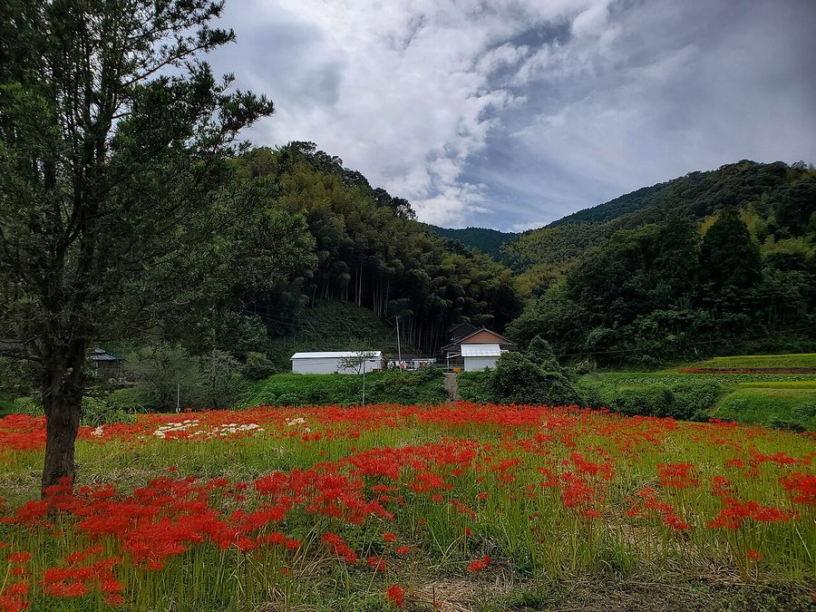
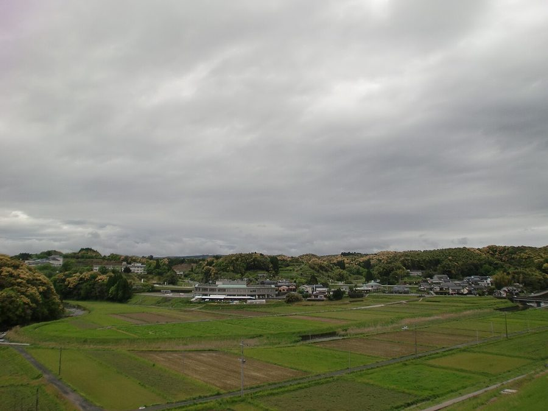
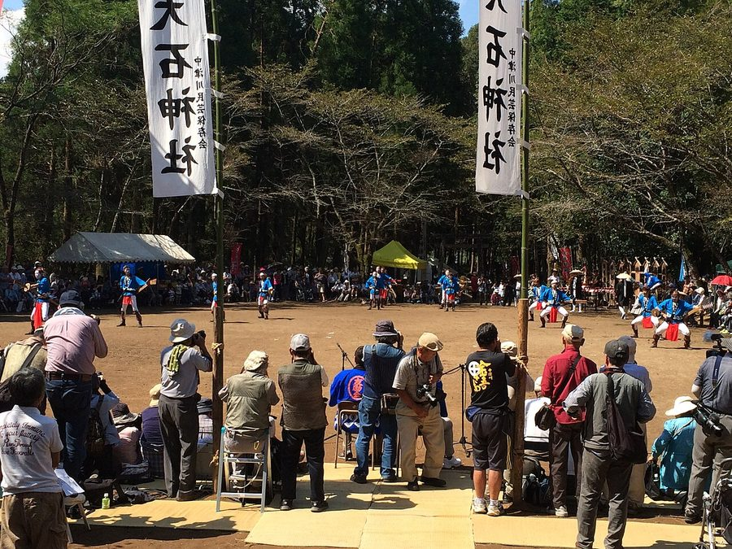
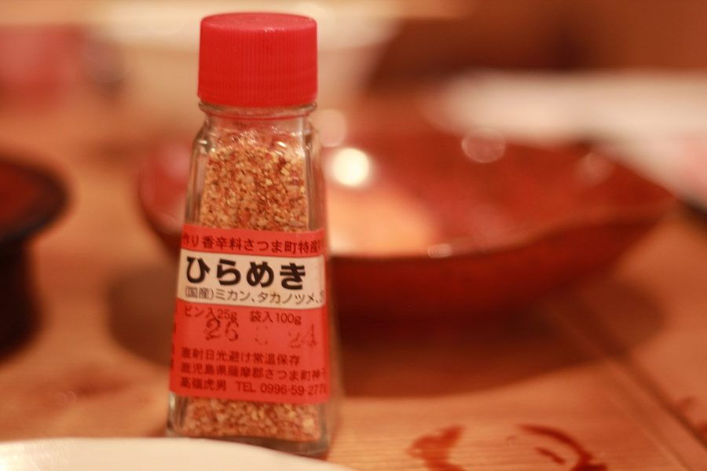

鹿児島県薩摩郡さつま町の日帰り温泉・銭湯・サウナ（19件）
寄り道スポット検索アプリ「ヨッテコ」の収録データから、鹿児島県薩摩郡さつま町の日帰り温泉・銭湯・サウナを営業時間・料金つきで一覧にしました（2026年8月時点）。
最も安いのはさがら温泉（100円）。最も遅くまで入れるのは平和温泉センター（22:00まで）。朝風呂ならかしはら温泉（5:00開店）。
鹿児島県薩摩郡さつま町はどんなまち？
数字で見る🔍鹿児島県薩摩郡さつま町
まちの横顔




- 地形: 鹿児島県の中北部、内陸地域に位置する町です。町域には川内川が流れ、烏帽子岳・紫尾山などの山を望み、鶴田ダムがあります。薩摩郡に属し、県内の町村では最多の人口を擁します。
寄り道充実度（全国偏差値）
偏差値・順位は、ヨッテコ収録データ（2026年8月時点・26,033件）を市区町村別に集計した施設数の全国分布（1,728市区町村）から毎回算出しています。カードを押すとカテゴリ別の分析に切り替わります。
日帰り温泉から見た鹿児島県薩摩郡さつま町
天然温泉を使う店は95%、全国水準（67%）の1.4倍。——件数ではなく、中身に特徴が出るまち。
- 露天風呂がある店は26%で、全国水準（46%）を下回ります。湯を楽しむ舞台は、屋外ではなく屋内に寄っています。
- 95%の店が天然温泉です。全国水準は67%です。95%が天然温泉という構成は、地下から湧くものの豊かさを映しています。
- サウナがある店は21%で、全国水準（52%）を下回ります。サウナで整えるより、湯そのものに浸かりに行くまちです。
- 21時以降も営業する店は32%で、全国水準（40%）を下回ります。立ち寄るなら日のあるうちに、と考えておくのが良さそうです。
- 入浴料の中央値は275円でした（判明16件）。全国の650円より58%低い水準です。275円を目安にしておけば、多くの店で足ります。
出典: 施設データ=ヨッテコ収録データ（26,033件・2026年8月時点）。偏差値・全国順位・全国水準は全1,728市区町村の分布から毎回算出。 / 人口=総務省「住民基本台帳に基づく人口、人口動態及び世帯数」（2026年1月1日現在） / 面積=国土地理院「全国都道府県市区町村別面積調」（2026年4月1日時点） / 森林率=農林水産省「2025年農林業センサス（農山村地域調査）」市区町村別林野率（2025年、林野率（林野面積÷総土地面積）） / 年平均気温=気象庁「平年値（1991-2020年）」。市区町村の代表点（国土交通省「大字・町丁目レベル位置参照情報」）から最も近い観測点の値 / まちの解説=日本語版Wikipedia「さつま町」（https://ja.wikipedia.org/wiki/さつま町、2026年8月21日取得、CC BY-SA 4.0） / 写真=Wikimedia Commons（各キャプションに作者・ライセンスを記載）
曜日別の営業施設数
| 月 | 火 | 水 | 木 | 金 | 土 | 日 |
|---|---|---|---|---|---|---|
| 19 | 18 | 18 | 19 | 19 | 19 | 19 |
火・水曜日が最も休みが多く（各1件が定休）、年中無休は17件です。※営業時間データのある19件で集計
入浴料金の分布（大人）
| 500円以下 | 12件 | |
| 801〜1,200円 | 4件 |
料金が確認できた16件で集計。
施設一覧
| 施設 | 営業時間 | 料金（大人） |
|---|---|---|
| かしはら温泉 天然温泉 | 05:00〜20:00 | 200円 |
| きらら温泉 白男川紫陽館 天然温泉 さつま町白男川地区の公共温泉施設。大・小会議室併設でスポーツコンベンション対応可能。 | 13:00〜21:00（火休） | 200円 |
| さがら温泉 天然温泉 食堂内にある秘湯的温泉。美肌効果抜群のかけ流しの温泉。料金は驚きの100円。 | 07:00〜21:30 | 100円 |
| さつまの天然温泉 ちくりん温泉 天然温泉 さつま町の天然温泉。源泉掛け流しで温度は低めだが、体の芯から温まり湯冷めしない。9室の個室家族湯あり。 | 06:30〜22:00 | 900円 |
| さつまゴルフリゾート 天然温泉露天風呂サウナ ゴルフリゾートの温泉施設で、サウナ付きの大浴場と岩造り露天風呂を備えた施設。山々に囲まれた高原で温泉を満喫できます。 | 13:00〜17:00 | 1,000円 |
| さつま天然温泉 立寄家族湯 つるや 天然温泉 川内川の雄大な流れと家庭的な寛ぎが自慢の家族湯。平成25年にリニューアルし、自分流に楽しむ貸部屋と家族湯を備える。 | 06:00〜20:00 | 300円 |
| さつま町 健康ふれあいセンター あび～る館 天然温泉露天風呂サウナ さつま町の健康ふれあいセンター。天然温泉が自慢で、レストラン「寿白」やスポーツコンベンション対応の大広間を備えている。 | 09:00〜21:00 | 330円 |
| ちさと旅館別館 天然温泉 | 06:00〜22:00 | 200円 |
| 北薩広域公園 オートキャンプ場 露天風呂 北薩地域全体のシンボル的役割を持つ広域公園。温泉入浴施設があるかは不明確。オートキャンプ場などの複合施設。 | 09:00〜18:00 | — |
| 宮之城温泉 旅館玉之湯 天然温泉 | 10:00〜20:00 | — |
| 家族温泉 健康村 天然温泉 気軽に立ち寄れるドライブスルー温泉。家族やペットまで利用可能な温泉施設。 | 08:00〜21:30（水休） | 900円 |
| 平和温泉センター 天然温泉サウナ さつま町轟町にある温泉銭湯。市街地から少し離れた住宅街に位置し、気泡風呂や超音波、寝風呂、サウナなど充実した設備が特徴。… | 06:00〜22:00 | 250円 |
| 旅館湯田荘 天然温泉 宮之城温泉の純和風温泉宿。掃除の行き届いた男女別大浴場で美肌効果抜群の温泉が源泉かけ流し。おかみさんの美肌を見れば泉質の… | 13:00〜16:00 | 300円 |
| 湯田区営温泉 天然温泉 宮之城湯田温泉唯一の公衆浴場として地元に親しまれている区営温泉。地元住民には70円、区外民でも150円と良心的な料金です… | 06:00〜21:00 | 150円 |
| 紫尾区営大衆浴場 紫尾温泉 神ノ湯 天然温泉 さつま町紫尾の神の湯公衆浴場。紫尾神社拝殿下に源泉をもち、新鮮な温泉を堪能できる。足湯や飲泉場も備え、温泉成分を飲用利用… | 05:00〜21:30 | 100円 |
| 紫尾温泉 ちどり荘 天然温泉露天風呂 紫尾神社拝殿下から湧き出る神の湯。源泉100%かけ流しで、ツルツルとした肌触りが特徴。岩を配した男女別浴場と露天風呂（夏… | 09:00〜21:00 | 300円 |
| 紫尾温泉 旅籠しび荘 天然温泉 開湯750年の歴史を持つ紫尾温泉。2つの自噴泉を持ち、異なる温度の泉質を提供。「神の湯」「美人の湯」として知られる。 | 08:00〜21:00 | — |
| 紫尾湯の宿 くすのき 天然温泉露天風呂サウナ 紫尾山の東麓に湧く自家源泉からの豊富な湯量。加水・加温を一切しない100%源泉かけ流しで、シャワーまでも源泉100%。遠… | 12:00〜21:00 | 1,000円 |
| 薩摩薬師温泉 天然温泉 九州八十八ヶ所霊場第48番音泉山「薩摩薬師寺」敷地内にある温泉。ぬるめのかけ流し温泉でゆっくり入浴できる。 | 15:00〜19:00 | 200円 |